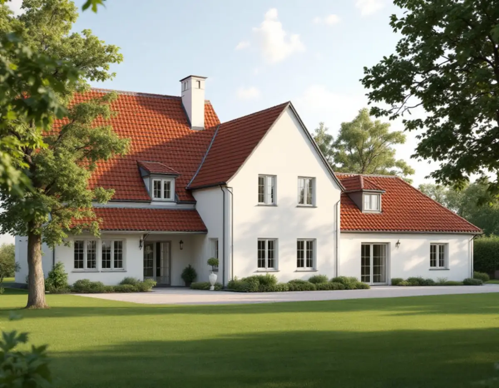
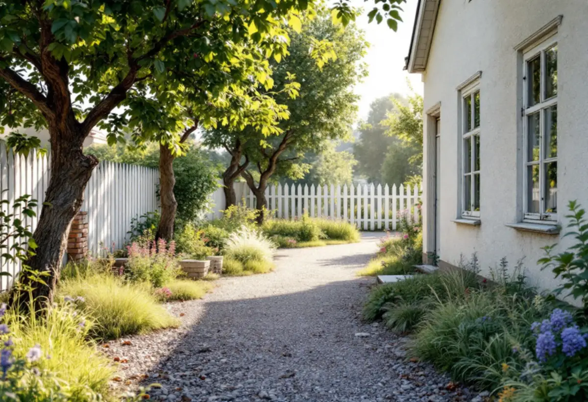

Platsbesök
Vi går igenom huset, tomten, träden och terrängen och vad du vill bygga.

Att bygga till eller bygga nytt på en tomt i Danderyd handlar lika mycket om tomten som om huset.
Beskriv jobbet kort.
Något blev fel. Kontrollera uppgifterna eller ring 08 12 410 276.
Vi tittar på jobbet på plats innan du får offert.
Du ser vad som ingår och vad det kostar.
Vi drar av ROT direkt och sköter ansökan.
Geal Entreprenad AB, Bromma. Org.nr 559303-7566.

Kommunens riktlinjer för kulturmiljön från 2024 säger något om var garaget får stå, hur mycket marken får sprängas och om stora tomter bör delas. Geal Entreprenad AB tar hand om byggprojektet som total entreprenad, från första skissen till slutbesiktning, och första steget är att läsa vad som gäller för just din fastighet.
Danderyds kommun har tagit fram riktlinjer för kulturhistoriska byggnader och miljöer. Enligt dokumentet ska de användas som vägledning när plan- och lovärenden bedöms, och de riktar sig samtidigt till fastighetsägarna. Riktlinjerna är indelade efter kommundelarna Enebyberg, Danderyd, Djursholm och Stocksund och därefter efter utpekade områden, och för nästan varje område finns ett eget stycke om ny- och tillbyggnad.
Budskapet är ofta detsamma: vid en tillbyggnad ska man utgå från den omgivande bebyggelsen när det gäller husens placering på tomten, utformning och volymverkan. För flera områden står det också att garage och carport inte bör placeras mot gatan. I grupphusområdena ska nya tillägg utformas med stor hänsyn till miljöns kulturhistoriska värden, och i området som kallas Det moderna Danderyd bör fasaduttryck som inte hör till 1950- och 1960-talens stilideal undvikas.
För oss betyder det att skissen börjar med gatan och grannhusen, inte med planlösningen. En tillbyggnad som ligger rätt på tomten och har rätt volym är lättare att få igenom och passar bättre in.
Riktlinjerna lägger stor vikt vid trädgården. Äldre träd och buskar, staket, murar och stenlagda gångar kan enligt kommunen ha ett högt kulturhistoriskt värde. I många områden ska markarbeten i form av sprängning, fyllning och schaktning minimeras, och utfyllnad med stödmurar och hårdgjorda ytor undvikas. Ett nytt hus eller en ny flygel bör alltså anpassas efter terrängen snarare än tvärtom.
Riktlinjerna påminner också om fornlämningar. Ska du göra ingrepp i marken eller en tillbyggnad på tomten är det ditt ansvar att ta reda på om det finns fornlämningar i området, och byggherren har skyldighet att undersöka det. Vid frågor, eller om något upptäcks på platsen, är det länsstyrelsens kulturmiljöenhet i Stockholm som ska kontaktas.
Om större villatomter säger dokumentet att äldre villatomter med ursprunglig storlek inte bör styckas av, och att ny bebyggelse ska anpassas till omgivningen i volym, utformning och placering. Den som funderar på att dela tomten och bygga ett nytt hus bör därför räkna med att frågan prövas mot kulturmiljön.
Sedan den 1 december 2025 får ett en- eller tvåbostadshus byggas till utan bygglov, så länge tillbyggnaden inte går över taknocken och alla lovfria tillbyggnader på huset tillsammans är högst 30,0 kvadratmeter. Danderyds kommun påpekar att tidigare skärmtak och attefallstillbyggnader räknas in. Ligger fastigheten i ett kulturhistoriskt särskilt värdefullt område, eller är byggnaden särskilt värdefull, krävs alltid bygglov. Det framgår av kommunens kulturmiljökarta.
Lovfria tillbyggnader och komplementbyggnader ska ligga minst 4,5 meter från tomtgränsen. Närmare än så krävs skriftligt medgivande från alla berörda grannar, och kommunen påpekar att detaljplanen ibland ändå hindrar en placering nära gränsen. Mot gata, park eller naturmark kan kommunen själv lämna medgivande, och då ska en måttsatt situationsplan skickas in.
En detalj som är lätt att missa: för åtgärder som inte kräver bygglov men som ökar bruttoarean på fastigheten ansvarar fastighetsägaren för att informera kommunens VA-enhet. Berörs husets konstruktion krävs dessutom anmälan och startbesked innan bygget börjar.
Många projekt i Danderyd blir mer än en tillbyggnad. Ett nytt kök i den nya delen, ett badrum på övervåningen eller en ny takfot som ska mötas med den gamla. Vi samordnar snickare, plattsättare, målare och behöriga installatörer för el och VVS, så att du har en kontakt och ett skriftligt avtal. Läs mer om arbetssättet under byggfirma i Stockholm.
Ska taket på den befintliga delen ses över i samma veva är det klokt att planera det tillsammans med tillbyggnaden. Se takbyte i Danderyd för vad kommunen säger om takmaterial.
Vi går igenom huset, tomten, träden och terrängen och vad du vill bygga.
Kulturmiljökartan, detaljplanen och riktlinjerna för ditt område kontrolleras.
Du får ett skriftligt kostnadsförslag där ROT-berättigat arbete anges separat.
Grannmedgivanden, bygglov eller anmälan tas fram där det behövs.
Grund, stomme, tak och installationer samordnas av oss.
Vi går igenom resultatet med dig och lämnar över handlingarna.
Rotavdraget är 30 procent av arbetskostnaden, högst 50 000 kronor per person och år och högst 75 000 kronor tillsammans med rutavdrag. Material och resor ger inget avdrag.
En tillbyggnad kan ge avdrag om någon av dess sidor sitter ihop med husets yttervägg till minst 75 procent, eller om det finns en dörr mellan tillbyggnaden och huset. Ett nytt fristående hus eller garage ger inget avdrag, och inte heller bygglovshandlingar eller arkitekt. Vi drar avdraget direkt på fakturan där det gäller.
Storleken, hur grunden kan anpassas till terrängen utan stora markarbeten, hur den nya delen ska anslutas till det befintliga huset och om materialval och utformning styrs av riktlinjerna för området. Installationer för kök eller badrum i den nya delen tillkommer. Efter ett gratis platsbesök får du ett skriftligt kostnadsförslag.
Total entreprenad för villan.
Byggfirma →Takbyte, takbesiktning och plåtarbeten.
Takläggare i Danderyd →Djursholm, Stocksund och Enebyberg.
Takrenovering i Danderyd →Villastäder, lovplikt och strandskydd.
Attefallshus i Danderyd →Villastäder, ritningar och ventilation.
Badrumsrenovering i Danderyd →Kalkfärg på puts, linoljefärg på trä.
Fasadmålning i Danderyd →Villastäder, egnahem och grupphus i Danderyd.
Fasadrenovering i Danderyd →Lovplikt, klassning och spröjs i Danderyd.
Fönsterbyte i Danderyd →Varsamt underhåll av villafönster i Djursholm.
Fönsterrenovering i Danderyd →Originalgolv i villor från 1890-talet och framåt.
Golvläggare i Danderyd →Slipa parkett och mönstergolv i villan.
Golvslipning i Danderyd →Villastäder, egnahem och kommunens regler.
Köksrenovering i Danderyd →Villor, egnahem och grupphus i Danderyd.
Målare i Danderyd →Rännor, stuprör och beslag i Danderyd.
Plåtslagare i Danderyd →Altaner, staket och carport.
Snickare i Danderyd →Villastaden, takmaterial och solceller.
Takbyte i Danderyd →Tapet och papptak i äldre villor.
Tapetsering i Danderyd →Funkis, grupphus och 1950-talsvillor.
Tillbyggnad i Danderyd →Riva varsamt, bygga om helt.
Totalrenovering i Danderyd →Eller ring 08 12 410 276, mån–fre 08–17.
Beskriv jobbet kort.
Något blev fel. Kontrollera uppgifterna eller ring 08 12 410 276.